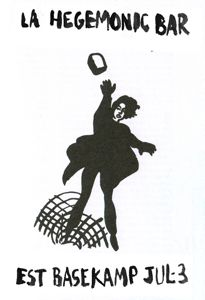

The Hegemonic Bar: Another round
Event #2: Riot conditions
Friday July 3rd, 6-8pm
FREE and open to the public.
Basekamp space
723 Chestnut Street, 2nd floor
Philadelphia, Pennsylvania 19106 usa
First enacted in 1999, The Hegemonic Bar is a social experiment and drinking game about class and money.
Hegemony refers to the strategies used by dominant powers to ensure the active complicity of the dominated in their own domination, by making any other option appear "out of the question", but in so doing enables alternatives to develop not in "response" but through previously unimagined countervailing forces.
The Hegemonic Bar is a theatrical set and fully working bar, split into 3 separate rooms to reflect a generic 3 class system of lower, middle, and upper. As individuals enter the door, they are given random amounts of fake money to spend at the bars or use as they wish.
In the July 3rd version of the installation, the gallery will be under riot conditions. With overturned cars and scattered (fake) bricks for throwing, the Basekamp reenacts some of the conditions of May '68, the Seattle protests of '99, and the current protests in Tehran.
--
Basekamp is an artist-group and non-commercial space, which has researched and co-developed interdisciplinary, self-organized art projects with other individuals and groups in various authorship-blurring configurations for the past decade. We use our Philadelphia space, along with temporary camps in other locations, as a home base to invite domestic and international collaborative groups in a joint experiment to develop new models of relations within overlapping art communities. The goal is to continue proposing collaboration as a practical and theoretical stance, and to participate in its evolution.
http://basekamp.com
contact +1 215-206-8176 | skype 'basekamp' | projects[at]basekamp[dot]com